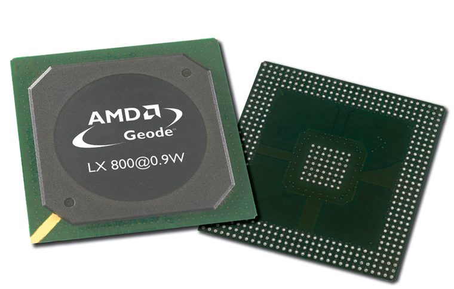

[ EMBEDDED PROCESSORS // IDENTIFIED PROCESSOR ]
AMD Geode LX 800
The Geode LX 800 is a 500 MHz x86 system-on-chip for embedded designs, integrating a low-power CPU core and memory/display interfaces.

MODEL IDENTIFICATION: AMD Geode LX 800. Compare the printed part number, speed grade, package, cache configuration, and stepping with the cited documentation; do not transfer one variant’s limits to another.
Recorded specifications
| Cataloged part | AMD Geode LX 800 |
|---|---|
| Era / family | AMD Geode LX family, 2005; LX 800 processor speed grade. |
| Key specifications | 500 MHz x86 core; 64 KB instruction and 64 KB data L1; 128 KB L2; 0.9 W typical processor power as specified for the LX 800; integrated DDR memory controller and display/video functions; 481-ball PBGA package. |
| Interface / fit | Soldered embedded BGA device intended for a board designed to the Geode LX datasheet and its companion CS5536 southbridge. Not compatible with PC desktop sockets. |
| Variant distinction | LX 800 is the 500 MHz member of the LX family; LX 700 and LX 900 are different clock/power grades. Confirm the board-specific CS5536 and power sequencing requirements. |
Compatibility and variants
- Soldered embedded BGA device intended for a board designed to the Geode LX datasheet and its companion CS5536 southbridge. Not compatible with PC desktop sockets.
- LX 800 is the 500 MHz member of the LX family; LX 700 and LX 900 are different clock/power grades. Confirm the board-specific CS5536 and power sequencing requirements.
- Confirm the system manufacturer’s exact processor support list, firmware minimum, board revision, power/thermal envelope, and memory requirements before installation.
Service and archival notes
Record the board vendor and complete platform schematic, BIOS, CS5536 revision, and thermal envelope. BGA inspection/rework requires board-level equipment; retain the original embedded board if operational.
Preserve provenance and a record of the exact marking, condition, tested board/platform, firmware, cooling, memory configuration, and test conditions. Separate published specification limits from observations made on a particular surviving system.
Sources & further reading
- AMD Geode LX Processor Series Data Book — LX 800 model specificationsSpecific model or manufacturer-family reference; verify revision and configuration against the device marking and platform documentation.
- AMD Geode LX 800 model identification and specification cross-referenceSpecific model or manufacturer-family reference; verify revision and configuration against the device marking and platform documentation.
- AMD Geode processor family history — AMD documentation archiveSpecific model or manufacturer-family reference; verify revision and configuration against the device marking and platform documentation.
- Retro tech creator — AMD Geode LX / Parade Of GeodesIndependent video review; treat as supplementary context, not primary manufacturer documentation.
Third-party reference pages and document archives are finding aids. The matching manufacturer datasheet, product specification, and board support documentation take precedence for the exact revision and host.